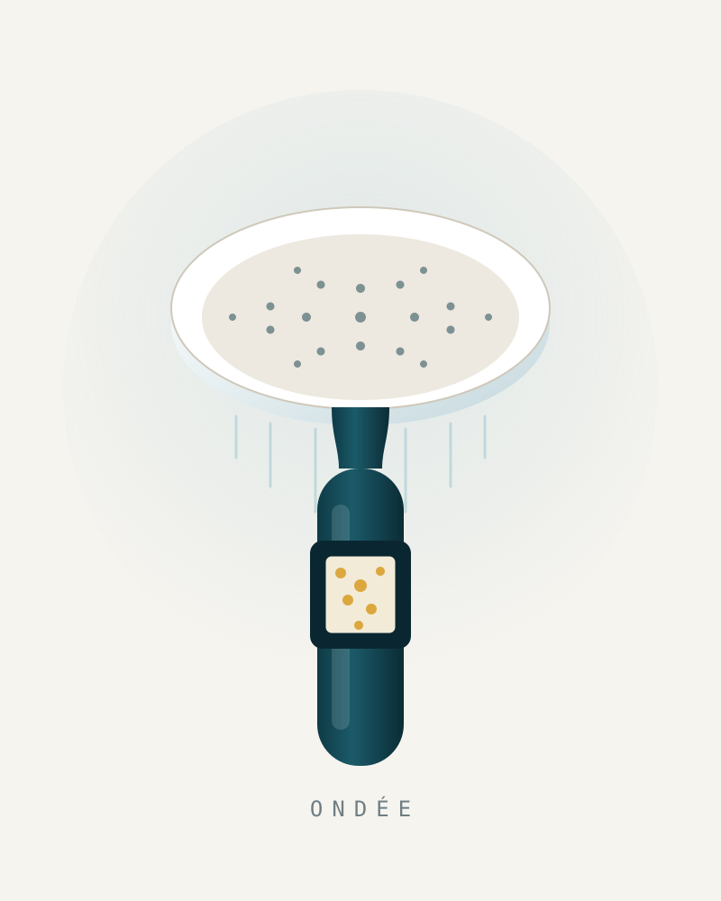
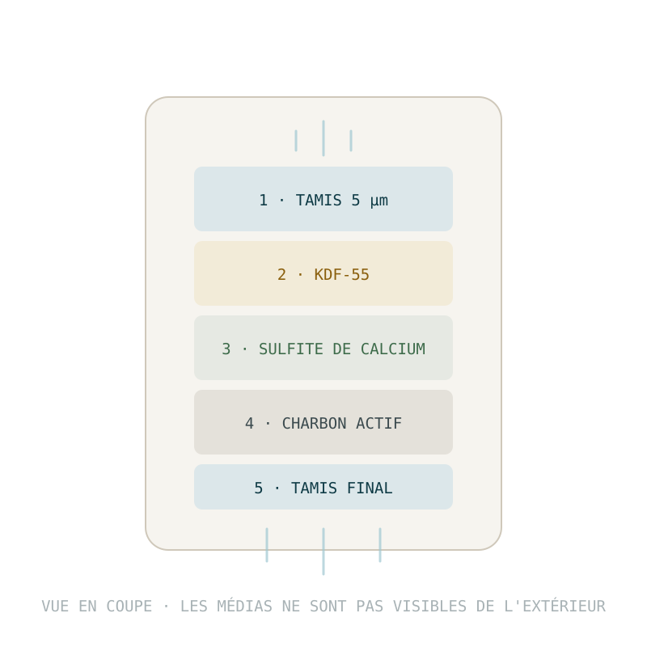
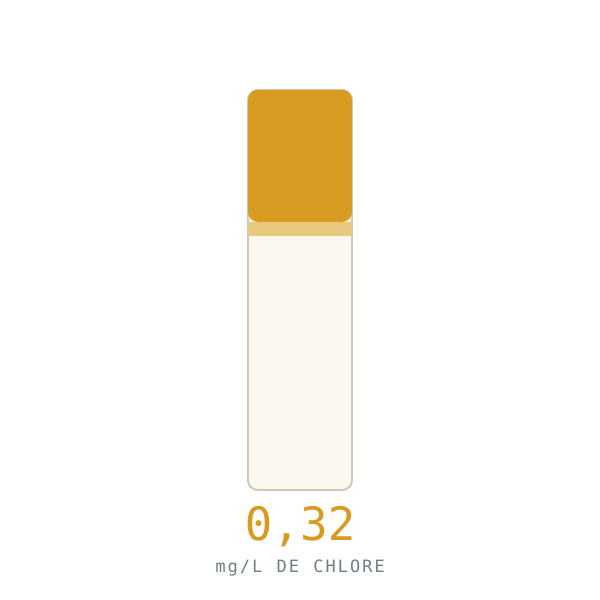
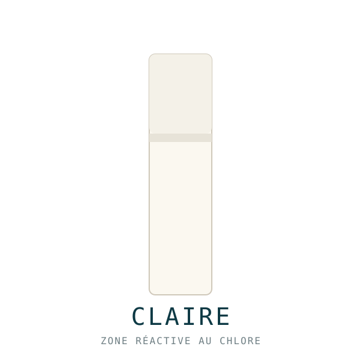

Filtre de douche
Votre eau de douche est chlorée.
Voici de combien.
ONDÉE retire le chlore de l'eau de votre douche — celui qui assèche la peau et ternit les cheveux. Tapez le nom de votre commune : nous affichons les relevés officiels du ministère de la Santé pour votre réseau. Avant même que vous achetiez quoi que ce soit.
- Bandelette de test incluse
- Installation en 60 s, sans outil
- 90 jours pour changer d'avis

Cartouche visible · on voit le filtre travaillerLe rapport d'eau ONDÉE
Nous ne vous demandons pas de nous croire.
Chaque prélèvement d'eau potable en France est analysé par les Agences régionales de santé et publié en open data. Nous allons chercher les derniers relevés de votre commune et nous vous les montrons tels quels — y compris quand ils sont bons.
Source : base SISE-Eaux du ministère chargé de la Santé, diffusée via l'API Hub'Eau — Qualité de l'eau potable. Données publiques, mises à jour mensuellement. ONDÉE n'intervient pas sur ces chiffres et n'en retire aucun bénéfice commercial direct.
Nous irons chercher, pour votre commune, les derniers prélèvements publiés par votre Agence régionale de santé.
- Dureté de l'eau (TH), en degrés français
- Chlore libre et chlore total, en mg/L
- Trihalométhanes, sous-produits de la chloration
- Conclusion de conformité du dernier prélèvement
- Date exacte du prélèvement et nom du distributeur
Aucune inscription, aucune donnée conservée. Si vos relevés sont bons, nous vous le dirons.
Le problème
Vous soignez ce que vous mettez sur votre peau.
Pas ce qui coule dessus.
Un Français prend environ 250 douches par an. À chaque fois, entre 40 et 80 litres d'eau du réseau passent sur la peau et les cheveux. Cette eau est désinfectée au chlore — c'est ce qui la rend potable, et c'est indispensable. Mais le chlore ne fait pas la différence entre une bactérie et le film hydrolipidique de votre peau.
Sans filtre
L'eau arrive telle qu'elle sort du réseau
- Du chlore libre et du chlore combiné, présents dans quasiment tous les réseaux français
- Une odeur de « piscine » qui persiste dans la salle de bain et sur les cheveux mouillés
- Des sous-produits de chloration (trihalométhanes) mesurés dans les relevés officiels
- Des particules et de la rouille venues de canalisations parfois centenaires
Avec ONDÉE
L'eau passe par cinq étages avant de vous toucher
- Le chlore libre est neutralisé par réaction chimique — pas simplement « absorbé »
- L'odeur de chlore disparaît dès la première douche. C'est le signe le plus immédiat
- Les particules et la rouille sont retenues par deux tamis, en entrée et en sortie
- Vous le vérifiez vous-même avec la bandelette de test livrée dans la boîte
Ce qu'ONDÉE ne fait pas. ONDÉE n'adoucit pas votre eau. Aucun filtre de douche ne le fait : le calcium et le magnésium sont des ions dissous, trop petits pour être retenus par un média filtrant, et il faut un adoucisseur à résine échangeuse d'ions pour les enlever. Les marques qui vous vendent un filtre « anti-calcaire » vous racontent une histoire. Nous préférons vous vendre ce que le produit fait réellement.
Comment ça marche
Trois gestes. Puis plus rien pendant trois mois.
Vous dévissez l'ancien
ONDÉE se visse sur le flexible standard français et européen (filetage 15/21, soit G½″). À la main, sans clé, sans plombier, sans téflon. Le joint est déjà en place. Comptez soixante secondes.
Vous testez avant / après
La boîte contient deux bandelettes de test au chlore. Une pour votre eau actuelle, une pour l'eau filtrée. Vous n'avez pas à nous croire sur parole : la couleur change ou elle ne change pas.
Vous changez la cartouche tous les 90 jours
La cartouche est datée. Quand elle arrive au bout, vous la sortez et vous en clipsez une neuve — dix secondes. Avec l'abonnement, elle arrive dans votre boîte aux lettres avant que vous y pensiez.
La cartouche, en coupe
Cinq étages, et aucun d'eux n'est décoratif.
Beaucoup de filtres de douche vendus en France contiennent des billes minérales colorées dont aucun essai ne démontre l'effet. La cartouche C90 est chargée, selon la composition annoncée par le fabricant, en KDF-55 et en sulfite de calcium — deux médias couramment employés pour réduire le chlore libre en douche. ONDÉE n'est pas certifié NSF/ANSI 177 et ne le prétend pas.
Le KDF-55 et le sulfite de calcium agissent par réaction chimique, pas par adsorption. C'est pour cette raison qu'ils continuent de fonctionner à 40 °C, alors que le charbon actif seul perd beaucoup de son efficacité en eau chaude — le cas de figure exact d'une douche.

Ce que vous remarquerez
Dans cet ordre-là, et pas dans un autre.
Nous préférons vous dire à quoi vous attendre plutôt que de vous promettre une transformation. Voici ce que rapportent les utilisateurs de filtres à chlore, du plus immédiat au plus lent.
Dès la première douche
L'odeur de chlore disparaît. C'est le changement le plus net et le plus rapide : la salle de bain ne sent plus la piscine, et les cheveux mouillés non plus.
Après quelques jours
La sensation de tiraillement après la douche s'atténue chez beaucoup de gens. Si vous vous hydratez systématiquement en sortant, c'est souvent là que vous le remarquez.
Après trois à quatre semaines
Sur cheveux colorés ou décolorés, les utilisateurs rapportent moins de ternissement entre deux passages chez le coiffeur. C'est progressif, et cela dépend beaucoup de votre eau.
Une pression conservée
Le diamètre interne et le nombre de buses sont calculés pour que la cartouche ne bride pas le débit. C'est la première plainte sur les filtres bon marché ; nous avons conçu le filtre autour du problème.
Une preuve dans la boîte
Deux bandelettes de test au chlore. Testez votre eau avant, testez-la après. Si la couleur ne bouge pas, renvoyez-nous le filtre : nous remboursons et nous payons le retour.
Plus rien à gérer
L'abonnement envoie la cartouche suivante tous les 90 jours, dans la boîte aux lettres, sans engagement. Vous décalez, vous suspendez ou vous arrêtez en deux clics.
L'offre
Un filtre. Quatre façons de commencer.
Le filtre se visse entre votre flexible et votre pomme de douche : vous gardez la vôtre, ou vous prenez la nôtre. La cartouche dure 90 jours, et son prix baisse à mesure que vous prenez de l'avance.
Voir la fiche produit complète, les variantes et l'abonnement →
La seule transformation que nous montrons
Pas de photo de cheveux. Une bandelette de test.
Les photos « avant / après » de cheveux sont invérifiables : éclairage, brushing, angle. Nous ne vous en montrerons pas. Ce que nous pouvons montrer, c'est une mesure — la même bandelette de test au chlore, trempée dans la même douche, à trente secondes d'intervalle.

Eau du robinet, non filtrée
Bandelette DPD au chlore libre. La zone réactive vire à l'ambre.

La même eau, après ONDÉE
Sous le seuil de détection de la bandelette. La zone reste blanche.
Mesure réalisée sur un réseau à 0,32 mg/L de chlore libre, à 38 °C, sur cartouche neuve. Vos valeurs dépendront de la teneur en chlore de votre commune, de la température de votre eau et de l'âge de la cartouche : c'est précisément pour cela que nous mettons les bandelettes dans la boîte plutôt que de vous demander de nous croire.
Ce qui se passe ailleurs
La France est en retard d'un filtre.
Aux États-Unis et au Royaume-Uni, le filtre de douche est devenu un produit de soin à part entière. Jolie a annoncé dépasser 40 M$ de chiffre d'affaires annuel. Hello Klean, racheté en partie par Brita, revendique plus de 500 000 clients et réalise environ 75 % de ses ventes par abonnement de cartouches. En France, 60 % des foyers reçoivent une eau dure — et presque personne ne filtre sa douche.
Notre honnêteté sur les avis
Nous n'avons pas encore d'avis clients.
ONDÉE vient de se lancer. Nous n'avons donc aucun avis à vous montrer — et nous n'en inventerons pas. Voici ce que nous mettons à la place : deux bandelettes de test dans la boîte, les relevés officiels de votre commune affichés avant l'achat, une page entière sur ce que le produit ne fait pas, et 90 jours pour changer d'avis.
Questions
Les questions qu'on nous pose vraiment.
Non. Et méfiez-vous de tous ceux qui vous disent l'inverse. Le calcaire, ce sont des ions calcium et magnésium dissous : ils sont bien plus petits que les pores de n'importe quel média filtrant et traversent sans être retenus. Seul un adoucisseur à résine échangeuse d'ions les retire réellement, et cela se pose sur l'arrivée d'eau du logement, pas au bout d'un flexible de douche.
ONDÉE agit sur le chlore, les sous-produits de chloration, les particules et la rouille. Votre paroi de douche gardera ses traces blanches. Nous préférons vous le dire avant l'achat plutôt qu'après.
C'est la première crainte, et elle est fondée : la plupart des filtres bon marché brident le débit parce que la cartouche est trop dense et la section de passage trop étroite. ONDÉE a été dessiné dans l'autre sens — la géométrie du corps et le nombre de buses sont calculés pour le débit avec cartouche en place, pas sans.
Une baisse de pression progressive après plusieurs semaines est en revanche normale : elle signifie que le tamis a fait son travail et qu'il est temps de changer la cartouche. C'est votre indicateur de remplacement le plus fiable.
ONDÉE se visse sur un flexible de douche au filetage 15/21 (G½″), qui est le standard français et européen depuis des décennies. Si votre pommeau actuel se dévisse à la main du flexible, ONDÉE vient se placer entre les deux — vous gardez votre pomme de douche. Le joint d'étanchéité est déjà monté.
Deux exceptions : les colonnes de douche à tête fixe encastrée, et certains modèles de marque à raccord propriétaire. En cas de doute, envoyez-nous une photo de votre raccord à bonjour@ondee.fr avant de commander — nous répondons dans la journée.
90 jours pour un foyer de deux personnes, soit environ 15 000 litres. Deux facteurs raccourcissent cette durée : un foyer nombreux, et une eau chargée en particules. Deux signes vous alertent — la pression qui baisse et l'odeur de chlore qui revient.
Chaque cartouche porte une case à dater au feutre indélébile. C'est basique, et c'est le seul système que personne n'oublie de mettre en route.
Avec les deux bandelettes de test au chlore livrées dans la boîte. Vous en trempez une dans l'eau de votre douche actuelle, vous installez ONDÉE, vous trempez la seconde. La zone réactive vire à l'ambre en présence de chlore libre et reste blanche s'il n'y en a plus.
C'est une mesure imparfaite — une bandelette n'est pas un laboratoire — mais c'est une mesure, et c'est infiniment plus honnête qu'une photo de cheveux avant/après.
Non, et nous ne le prétendrons jamais. ONDÉE n'est pas un dispositif médical et n'a aucune vocation thérapeutique.
Pour être complets : une méta-analyse publiée en 2021 dans Clinical & Experimental Allergy (Jabbar-Lopez et coll.) a trouvé une association entre eau dure et eczéma atopique chez l'enfant (odds ratio 1,28), mais avec un niveau de preuve jugé très faible — et les deux essais randomisés inclus n'ont montré aucune amélioration significative de la sévérité de l'eczéma avec un adoucisseur. Nous citons cette étude parce qu'elle nuance notre propre discours, pas parce qu'elle le sert.
Si vous avez une pathologie cutanée, parlez-en à un dermatologue. N'achetez pas un filtre de douche à la place.
De la base SISE-Eaux du ministère chargé de la Santé, qui centralise les analyses du contrôle sanitaire réglementaire réalisées par les Agences régionales de santé sur chaque unité de distribution. Nous les interrogeons en direct via l'API publique Hub'Eau, éditée par l'Office français de la biodiversité.
Nous n'ajoutons rien, nous ne retirons rien et nous affichons la date du prélèvement. Si votre eau est excellente, le rapport vous le dira, et nous vous déconseillerons l'achat.
Livraison. Expédition depuis la France sous 48 h ouvrées. Comptez 2 à 4 jours ouvrés en point relais et 2 à 3 jours en Colissimo domicile. Offerte dès 49 € d'achat, 4,90 € en dessous. Belgique, Luxembourg, Suisse : 3 à 6 jours ouvrés.
Retours. Vous disposez de 14 jours de rétractation légale, que nous étendons volontairement à 90 jours. Le filtre peut avoir été installé et utilisé : c'est le principe même de l'essai. Nous prenons en charge les frais de retour. Remboursement sous 5 jours ouvrés après réception.
Garantie. La garantie légale de conformité de 2 ans et la garantie contre les vices cachés s'appliquent de plein droit (art. L.217-3 et suivants du code de la consommation). Nous ajoutons une garantie commerciale de 2 ans sur le corps du filtre contre tout défaut de fabrication ou fuite.
La garantie bandelette
Si la bandelette ne change pas de couleur, vous ne payez pas.
C'est la garantie la plus simple que nous ayons trouvée, et la seule qui nous engage vraiment. Installez ONDÉE, faites le test avant/après avec les bandelettes de la boîte. Si la couleur ne bouge pas, écrivez-nous : nous vous remboursons intégralement et nous payons l'étiquette de retour. Vous avez 90 jours, produit installé et utilisé, sans justification à fournir.
Pour finir
Commencez par regarder
ce qu'il y a dans votre eau.
Le rapport est gratuit, il prend dix secondes et il ne demande pas votre adresse e-mail. Si votre commune affiche une eau douce et peu chlorée, nous vous le dirons — et nous vous dirons de garder vos 79 €.
Analyser l'eau de ma communeAucune inscription. Aucune donnée conservée. Les relevés viennent directement de l'API publique du ministère de la Santé.